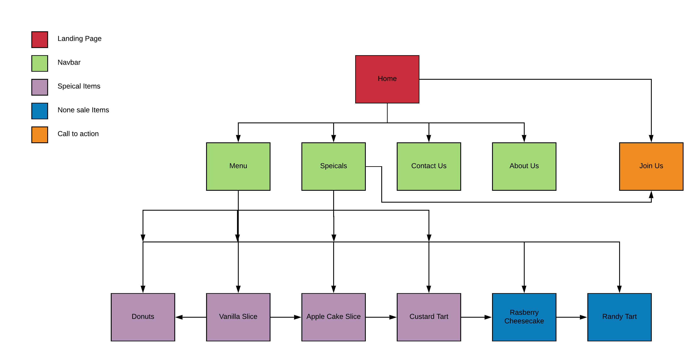

The goals of this website is to create a well designed and functional website that fulfills the needs of Petite Treats, these needs being the main goal of the website. Firstly the website needs to be prototyped and complete by 11/4/2020 as that is the deadline that Petite Treats have set. Another goal of the website is to ultimately increase the amount of unique customers that come into the physical store. The homepage of the website needs to be made in such a way that the main purpose of the page is used to be a call to action to the user so that they join a weekly email that sends the user an email showing the weeks special at Petite Treats, this will inevitably increase the amount of customers that come into the store a week.
To evaluate the success of the Petite Treats website, goals must be set in order to have a guideline so that it makes it possible to evaluate whether the website has either failed or succeeded. In order for this website to be successful it first must meet the expectations of Petite Treats in regards to the aesthetic and colour scheme this can be evaluated by simply showing the website to the owner and asking for feedback/approval. The website will be deemed successful if the call to action is used by most users that come to the website. This will be measured by the total number of unique users and the amount that use the call to action button on the home screen. The final way to measure whether the website is successful is if it draws in more people into the physical store of Petite Treats.
The target audience for Petite Treats is all people but, primarily the website needs to be designed for young families and young people, around the age of 17 – 35. to do this the website needs to be colourful and easy to read so that the information is clear this also means that the information needs to be concise as it will be taking up a bigger space. to also focus this target audience the website also will mainly cater to women as they are more common customers that come into the store. To do this the website will use femine colours in order to be more appealing and match what females commonly associate with themselves, these colors being pink and white. Finally to cater to the target audience the website will be easy to navigate as some people can struggle with navigating websites so making it as simple as possible it will assist these people finding the correct information as quickly as possible.
